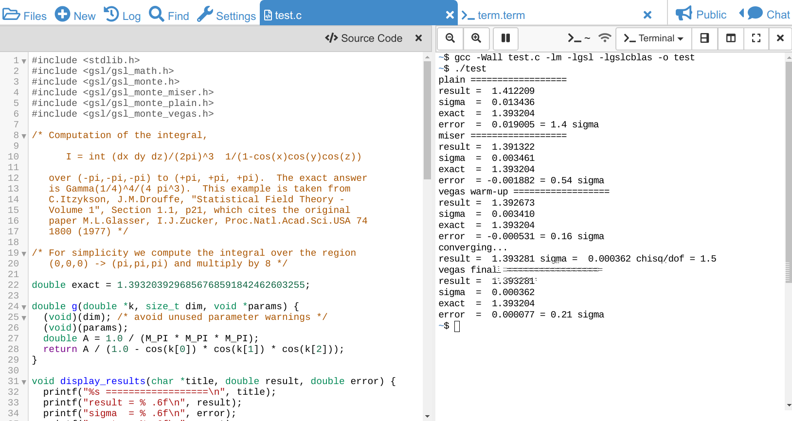

GSL C Code Compilation¶
This example explains how to compile some C code via GCC using the GSL, the GNU Scientific Library.
This example shows how to compile and run code from their documentation on CoCalc. We take their Monte Carlo Integration example, which you can also see here.
It starts like that:
#include <stdlib.h>
#include <gsl/gsl_math.h>
#include <gsl/gsl_monte.h>
#include <gsl/gsl_monte_miser.h>
#include <gsl/gsl_monte_plain.h>
#include <gsl/gsl_monte_vegas.h>
/* Computation of the integral,
I = int (dx dy dz)/(2pi)^3 1/(1-cos(x)cos(y)cos(z))
over (-pi,-pi,-pi) to (+pi, +pi, +pi). The exact answer
is Gamma(1/4)^4/(4 pi^3). This example is taken from
C.Itzykson, J.M.Drouffe, "Statistical Field Theory -
Volume 1", Section 1.1, p21, which cites the original
paper M.L.Glasser, I.J.Zucker, Proc.Natl.Acad.Sci.USA 74
1800 (1977) */
/* For simplicity we compute the integral over the region
(0,0,0) -> (pi,pi,pi) and multiply by 8 */
double exact = 1.3932039296856768591842462603255;
double g(double *k, size_t dim, void *params) {
(void)(dim); /* avoid unused parameter warnings */
(void)(params);
double A = 1.0 / (M_PI * M_PI * M_PI);
return A / (1.0 - cos(k[0]) * cos(k[1]) * cos(k[2]));
}
[...]
First, create a file test.c and paste that code there.
Then, split the editor using the Frame Editor functionality vertically,
and switch the right panel to a terminal.
This gives you access to the Linux command-line in the same directory as the file is.
Then, run the compilation and linking of that program via:
gcc -Wall test.c -lm -lgsl -lgslcblas -o test
gcc is the the GNU Compiler Collection, -lm links against the math library, -lgsl and -lgslclbas are for the GSL library and -o test tells the compiler to create an executable with the name test. -Wall is for enabling all warnings, such that we know if there is anything wrong with the source code!
After that, there should be no output running that line, a file test should exist and we can run it via:
./test
resulting in an output like that:
plain ==================
result = 1.412209
sigma = 0.013436
exact = 1.393204
error = 0.019005 = 1.4 sigma
miser ==================
result = 1.391322
sigma = 0.003461
exact = 1.393204
error = -0.001882 = 0.54 sigma
vegas warm-up ==================
result = 1.392673
sigma = 0.003410
exact = 1.393204
error = -0.000531 = 0.16 sigma
converging...
result = 1.393281 sigma = 0.000362 chisq/dof = 1.5
vegas final ==================
result = 1.393281
sigma = 0.000362
exact = 1.393204
error = 0.000077 = 0.21 sigma
Here is a screenshot how all this looks like:

{kind=link}